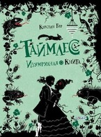

Обращённый в основном к прошлому, исторический жанр включает также изображения недавних событий, историческое значение которых признано современниками. Значимость запечатлённого события позволяет разграничивать собственно исторический жанр и произведения на исторические темы, близкие бытовому жанру.
Основные виды произведений исторического жанра - исторические картины, росписи, рельефы, монументальная и станковая скульптура, миниатюра, книжная и станковая графика. Исторический жанр часто переплетается с др. жанрами: портретом, пейзажем. Особенно тесно с историческим жанром смыкается батальный жанр - в тех случаях, когда раскрывается исторический смысл военных событий. Изображаемые реальные исторические события насыщались мифологическими, библейскими, аллегорическими персонажами, получали легендарное истолкование.

Таймлес. Изумрудная книга